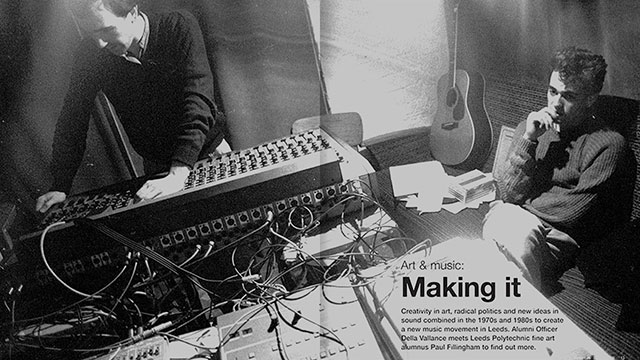

Publications
Print, Downloads, Digital Media

Friends of Pleasley Pit, 30th Anniversary booklet.

Pleasley Pit Museum Tour guide.

Interpretation board for Blidworth heritage trails.

Mine-Craft Heritage Project Workshops and Postscript.

Mine-Craft Photographic Archive Project Booklet.

Banners and Beyond, People Parades and Protest in the Nottinghamshire Coalfield.

Silltoe Trail Factory Handbook

Art & Music, Making It
Audiences like the feel of carefully crafted print. Instantly accessible and tangible keepsakes of exhibitions, trails and events
Thinkamigo Editions
Thinkamigo Editions is the publishing arm of the studio. As well as designing publications, Paul acts as publisher - registering each title with the British Library, securing ISBN codes and supplying the required metadata for legal deposit. Previous work also includes design for established publishers including Spokesman Books, the publishing imprint of the Bertrand Russell Peace Foundation, Trent Editions, Tempus Publishing and LeftLion.
Publications Gallery